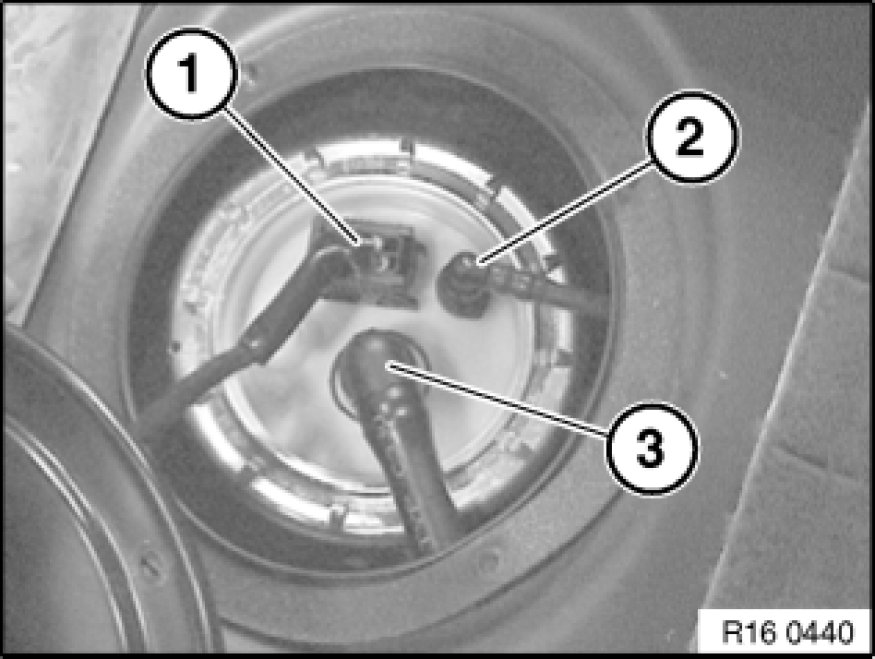
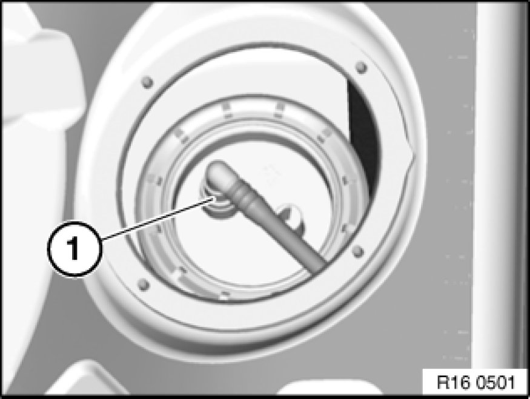
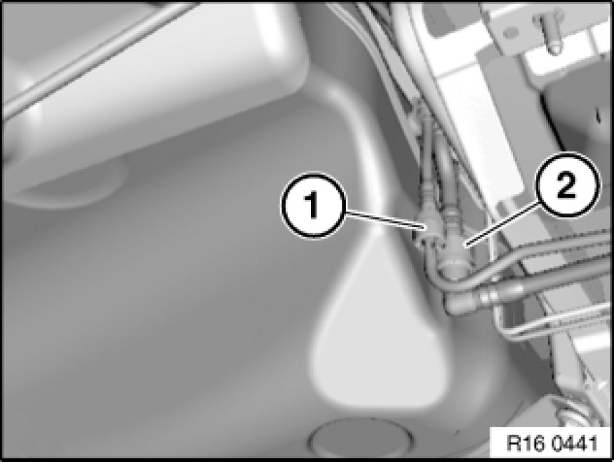
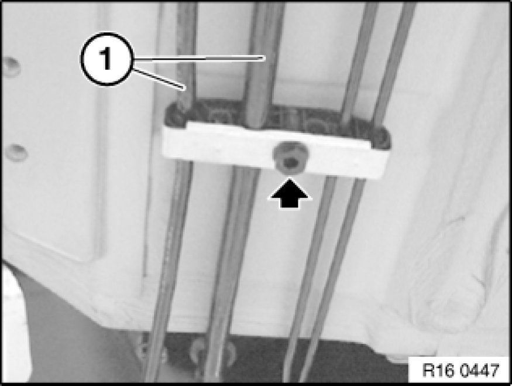
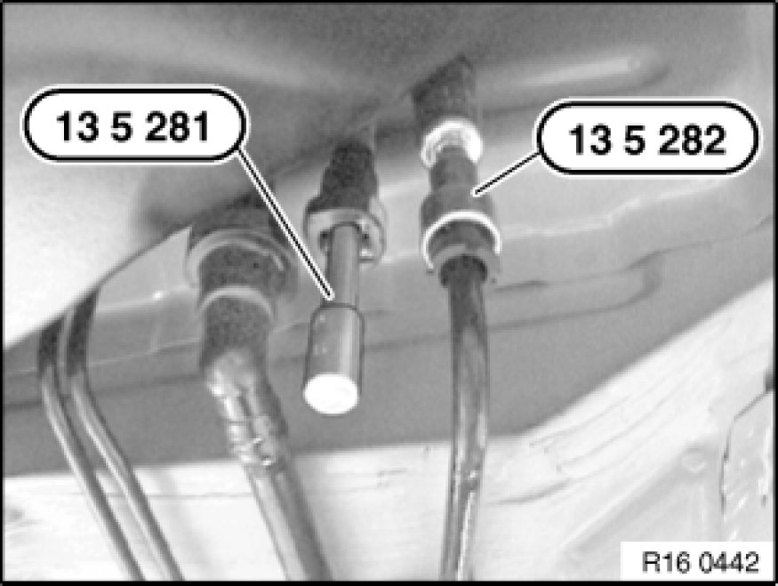
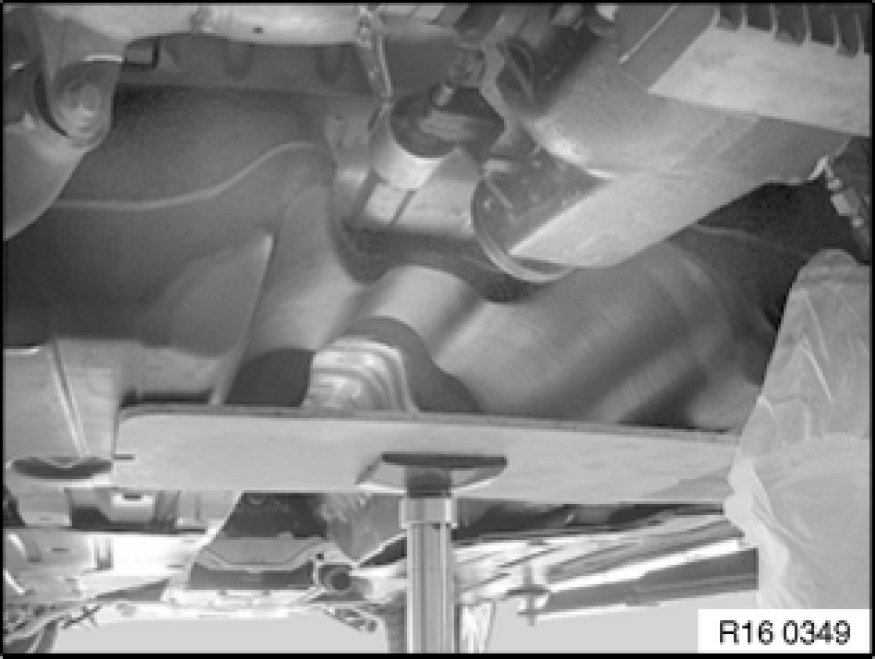
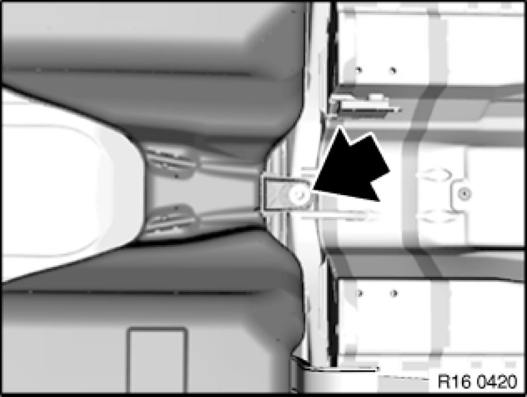
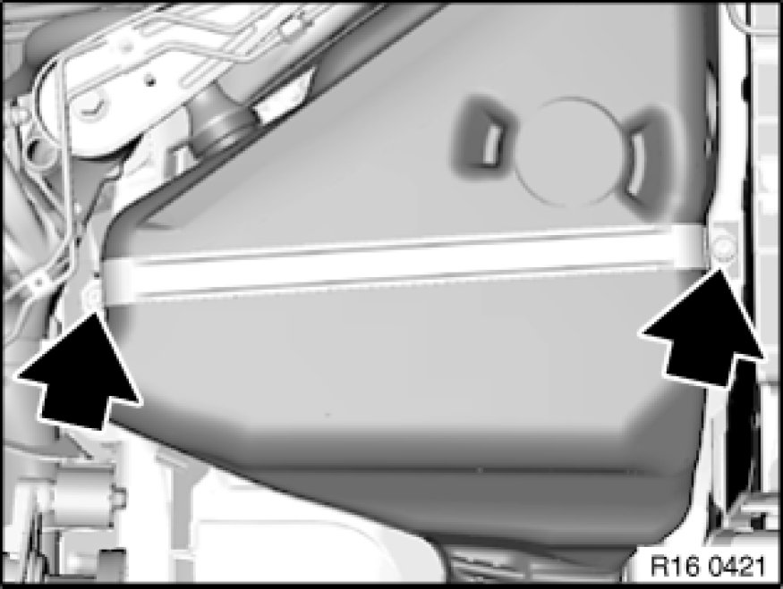
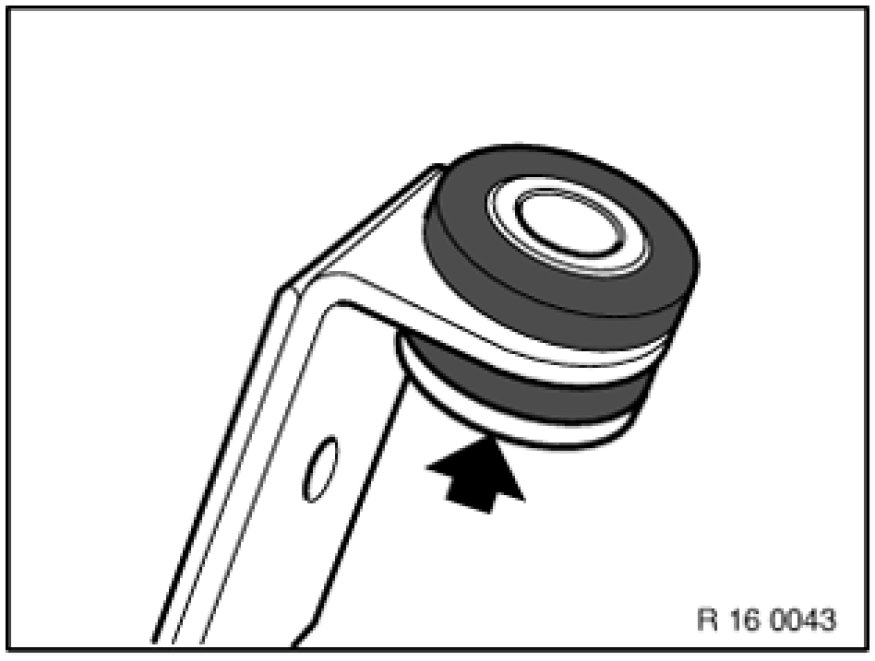
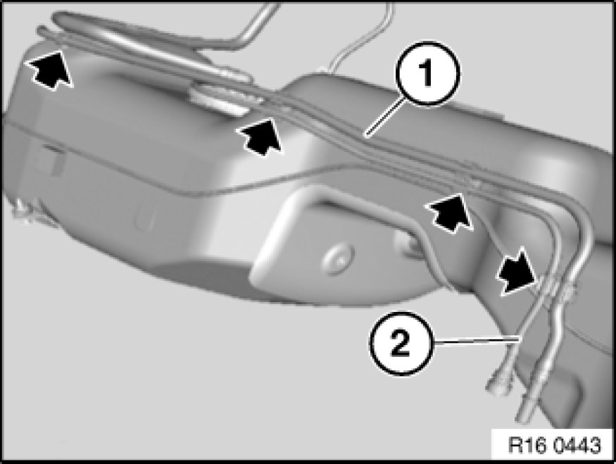

Removing and Installing/Replacing Fuel Tank
16 11 030 - Removing and installing/replacing fuel tank

Special tools required:
- 13 5 281
- 13 5 282

Recycling
Fuel escapes when fuel lines are detached. Have a suitable collecting container ready.
Catch and dispose of escaping fuel.
Observe country-specific waste-disposal regulations.

Important!
Ensure adequate ventilation in the place of work!
Avoid skin contact (wear gloves)!
After installation of fuel tank/prior to first engine start-up:
- Fill fuel tank with at least 5 liters of fuel.
- Check ground connection at fuel filler neck to body for continuity. If necessary, clean contact surface between body and fuel filler pipe screw connection.
- Check transfer function of suction jet pump Checking Repumping Function of Suction-Jet Pump With BMW Diagnosis System.

Necessary preliminary tasks:
- Draw off fuel from fuel tank Procedures
- Remove rear seat bench Rear Seat, Through-Loading
- Remove underbody panelling Removing and Installing/Replacing Left or Right Underbody Panelling
- Remove handbrake Bowden cables Service and Repair
- Remove complete propeller shaft Removing and Installing Propeller Shaft (Cardan Universal Joint) Completely

Release screws (1) and remove cover (2) from right side of fuel tank.

Right side:
Detach plug (1) and lines (2 and 3) from delivery unit

Left side (diesel only):
Unlock quick-release fastener (1) and detach vent line.

Unclip line (3) from holders.
Release hose clamps (1) and (4).
Detach fuel filler hose (2).
Installation:
Tightening torque 16 12 10AZ 16 12 Fuel Delivery.

Unlock and disconnect fuel feed line (1).
Unlock and disconnect fuel return line (2).

Important!
Risk of damage: Do not kink lines.
Release screw and unclip lines (1) from holder.

Seal fuel feed line with special tools 13 5 281 and 13 5 282.

Heavily support the fuel tank.

Release screw.
Installation:
Tightening torque, 16 11 1AZ 16 11 Fuel Tank and Mounting Parts.

Release screws for tightening straps on left and right and remove tightening straps.
Installation:
Tightening torque, 16 11 1AZ 16 11 Fuel Tank and Mounting Parts.

Installation Note:
Note rubber mount with spacer bush.
Wide collar on spacer bush points to screw head.

Important!
Risk of damage: Feed out fuel line (2).
Do not kink fuel line.
Lower tank until line (1) is accessible.
Unclip line (1) from holders.
Remove fuel tank downwards.
Note:
Illustration shows: tank removed.

Note:
The following components must be modified when the fuel tank is replaced:
- Left sensor unit 16 12 001 Removing and Installing/Replacing Fuel Gauge Sensor (Left Side)
- Right sensor unit
- Fuel lines on tank